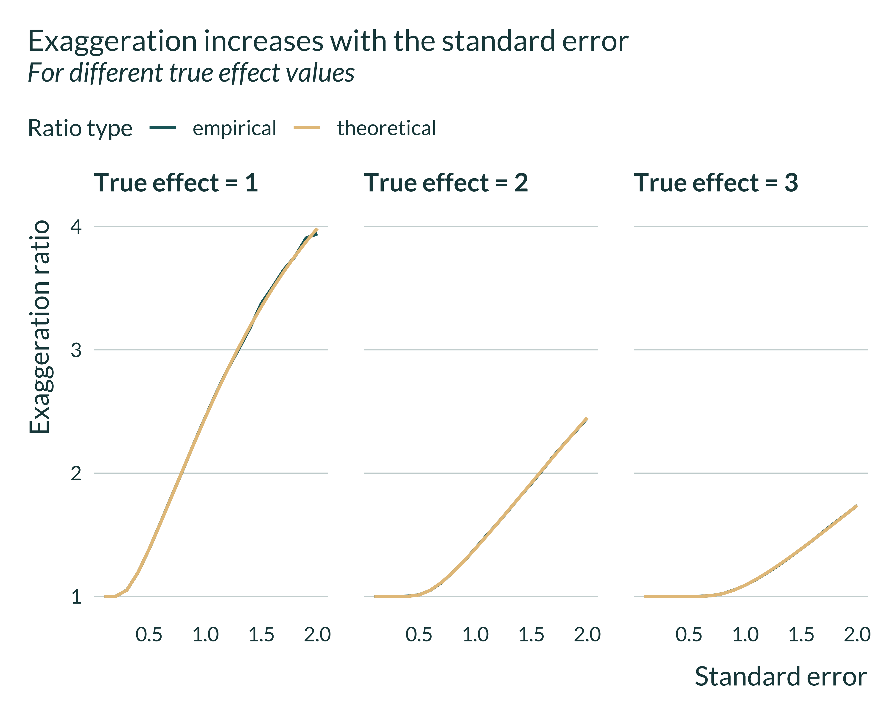
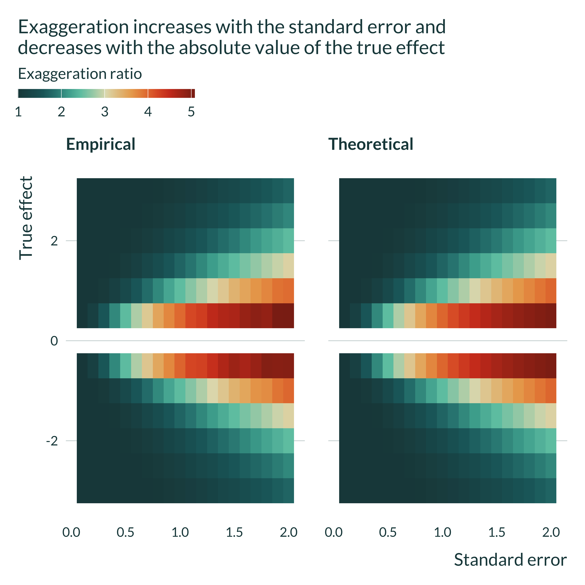
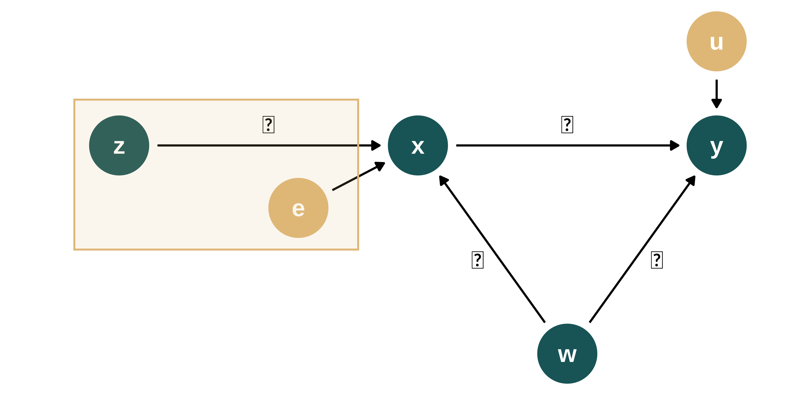

In this document, I run simple simulations to both illustrate and check my closed form solutions.
First, I verify that the exaggeration formula based on a one sided test and then the asymptotic variance of the various estimators are correct.
First I verify that the formula for exaggeration that I have computed is correct. For an estimator \(\hat{\beta} \sim \mathcal{N}(\beta, \sigma^{2})\) of a true effect of magnitude \(\beta_1\) > 0 and such that \(\beta = \beta_{1} + b\), the formula is:
\[E_1(\beta, \sigma, \beta_{1}, z_{\alpha}) = 1 + \dfrac{b}{\beta_{1}}+ \dfrac{\sigma}{\beta_1} \lambda\left( \dfrac{\beta_{1} + b}{\sigma} - z_{\alpha} \right) \]
where \(\lambda\) is the inverse Mills ratio. To check, I write two functions, E_empirical and E_theoretical that, for a given set of parameters values compute the empirical and theoretical exaggeration respectively. The former draw \(N\) estimates from the distribution corresponding to the parameters values and compute the average of statistically significant estimates.
E_empirical <- function(beta_1, b, sigma, N) {
estimates <- tibble(estimate = rnorm(N, beta_1 + b, sigma)) |>
mutate(signif = (abs(estimate) > qnorm(0.975)*sigma))
estimates |>
filter(signif) |>
pull(estimate) %>%
mean(.)/beta_1
}
E_theoretical <- function(beta_1, b, sigma) {
# lambda <- function(x) {dnorm(x)/pnorm(x)}
r_plus <- (beta_1 + b)/sigma + qnorm(0.975)
r_minus <- (beta_1 + b)/sigma - qnorm(0.975)
# E_theory <- 1 + b/beta_1 + sigma/beta_1*lambda((beta_1 + b)/sigma - qnorm(0.975))
1 + b/beta_1 + sigma/beta_1*((dnorm(r_minus) - dnorm(r_plus))/(1-pnorm(r_plus) + pnorm(r_minus)))
}I then write a function compare_E that returns a data frame with the exaggeration ratios, the percentage difference between the two and the parameters values:
Then, I run this function for a set of parameters values (\(\beta_1 \in \ [-3, 3]\backslash \{0\}\), \(b \in \{-0.5, 0, 0.5\}\) and \(\sigma \in [0.1, 2]\)) and compute summary statistics for the percentage difference:
param_E <- tibble(N = 100000) |>
crossing(beta_1 = seq(-3, 3, 0.5)[-7]) |> #remove 0
crossing(b = c(0, -0.5, 0.5)) |>
crossing(sigma = seq(0.1, 2, 0.1))
exag_ratios <- pmap(param_E, compare_E) |>
list_rbind()
summary(abs(exag_ratios$diff_perc), na.rm = TRUE) %>%
tibble(value = ., name = labels(.)) |>
pivot_wider(names_from = name, values_from = value) |>
kable()| Min. | 1st Qu. | Median | Mean | 3rd Qu. | Max. |
|---|---|---|---|---|---|
| 0.0003872196 | 0.0322401 | 0.08514258 | 5.727281 | 0.1810614 | 100 |
The empirical and theoretical exaggeration ratios seem very close. The formula is therefore probably correct.
I then double check that, for given parameters values, the exaggeration increases with the standard error of the estimator. In addition, that enables me to check that theroretical and empirical exaggeration ratios are comparable.
exag_ratios |>
filter(b == 0 & beta_1 %in% c(1, 2, 3)) |>
pivot_longer(starts_with("E_"), names_to = "type_ratio", values_to = "exag") |>
mutate(type_ratio = str_remove(type_ratio, "E_")) |>
ggplot(aes(x = sigma, y = exag, color = type_ratio)) +
geom_line() +
facet_wrap(~ paste("True effect =", beta_1), nrow = 1) +
labs(
title = "Exaggeration increases with the standard error",
subtitle = "For different true effect values",
x = "Standard error",
y = "Exaggeration ratio",
color = "Ratio type"
)
I plot another type of graph to better understand the evolution of the exaggeration with \(\beta_1\) and \(\sigma\).
exag_ratios |>
filter(b == 0) |>
pivot_longer(starts_with("E_"), names_to = "type_ratio", values_to = "exag") |>
mutate(type_ratio = str_remove(type_ratio, "E_")) |>
ggplot(aes(x = sigma, y = beta_1, fill = exag)) +
geom_tile() +
facet_wrap(~ str_to_title(type_ratio)) +
labs(
title = "Exaggeration increases with the standard error and \ndecreases with the absolute value of the true effect",
x = "Standard error",
y = "True effect",
fill = "Exaggeration ratio"
) 
For a given true effect size, exaggeration increases with the standard error. For a given standard error, it decreases with the true effect size. In addition, we can again check that the theoretical and empirical exaggeration ratios are very close.
In order to check that the asymptotic variances of the estimators I computed are correct, I generate a data set following the DGP described in the maths section (for a given set of parameters values). I then estimate the various models and retrieve simulated empirical variances to compare them to the theoretical ones I derived.
For consistency with the other simulations, I wrap this analysis into functions and follow the framework described here.
The DGP is described in the following DAG:

second_color <- str_sub(colors_mediocre[["four_colors"]], 10, 16)
dagify(y ~ x + w + u,
x ~ w + e,
exposure = c("y", "x", "w"),
# outcome = "w",
latent = c("u", "e"),
coords = list(x = c(y = 3, x = 2, w = 2.5, e = 1.5, u = 3),
y = c(y = 1, x = 1, w = 0, e = 1, u = 1.5))
) |>
ggdag_status(text_size = 5) +
theme_dag_blank(base_family = "Lato", legend.position = "none") +
scale_mediocre_d(pal = "coty") +
annotate(#parameters
"text",
x = c(2.5, 2.8, 2.2),
y = c(1.1, 0.45, 0.45),
label = c("beta", "delta", "gamma"),
parse = TRUE,
color = "black",
size = 5
) As in the math section we have:
\[y_{i} = \beta_{0} + \beta_1 x_{i} + \delta w_{i} + u_{i}\] \[x_{i} = \pi_0 + \pi_1 z_{i} + \gamma w_{i} + e{i}\]
Note that to get to the setting described in the OVB and CTRL sections of the maths, one can simply set \(\pi_1\) to 0.
I create three functions, one to generate the data, one to run the estimation and one to compute a simulation (just bundling together the two previous functions).
To compute the theoretical variance of the estimators, I need to know the mean and variance of my variables. The easiest solution to generate variables with a given mean and variance would be to consider only normally distributed variables. Yet, to prevent my results from being an artifact of the particular properties of the normal distribution, I also draw my data from less usual distributions: gamma, uniform and logistic ones.
In order to remain agnostic about the shape of the distribution of my variables, while being able to specify their mean and standard deviation, I create a function. rany draws \(n\) observations either from a normal, a logistic, a uniform or a gamma distribution with mean and variance equal to the one specified as inputs of the function.
To build a gamma distribution with mean \(\mu\) and variance \(\sigma^2\), the parameters of the gamma distribution must be:
For the uniform distribution, the parameters must be:
For the logistic distribution, the parameters must be:
The rany function is defined as follows:
rany <- function(n, mean = 0, sd = 1) {
n_distrib <- ifelse(mean == 0, 3, 4) #gamma distrib cannot have mean 0
#since it has a positive support
distrib_index <- sample(1:n_distrib, 1)
vect <- case_when(
distrib_index == 1 ~ rnorm(n, mean, sd),
distrib_index == 2 ~ rlogis(n, mean, sqrt(3*sd^2/pi^2)),
distrib_index == 3 ~ runif(n, mean - sqrt(3)*sd, mean + sqrt(3)*sd),
distrib_index == 4 ~ rgamma(n, mean^2/sd^2, rate = mean/sd^2),
.default = NA
)
return(vect)
}I then define the function to generate the data as follows:
generate_data_maths <- function(n,
mu_z,
sigma_z,
mu_w = 0, #one of the simplifying assumptions
sigma_w,
sigma_e,
pi_0,
pi_1,
gamma,
sigma_u,
beta_0,
beta_1,
delta) {
data <- tibble(id = 1:n) |>
mutate(
z = rany(n, mu_z, sigma_z),
w = rany(n, mu_w, sigma_w),
e = rany(n, 0, sigma_e),
x = pi_0 + pi_1*z + gamma*w + e,
u = rany(n, 0, sigma_u),
y = beta_0 + beta_1*x + delta*w + u
)
}I then define the parameters values. I pick these values at random:
| n | mu_z | sigma_z | mu_w | sigma_w | sigma_e | pi_0 | pi_1 | gamma | sigma_u | beta_0 | beta_1 | delta |
|---|---|---|---|---|---|---|---|---|---|---|---|---|
| 20000 | 0.3 | 0.5 | 0 | 0.7 | 1.2 | 1 | 0.8 | 0.6 | 0.6 | 2 | 1 | 0.5 |
Note that, I played around with these values to see if my results held. In addition, I built the present simulations to check my mathematical derivations and thus chose non-round parameter values in order to avoid peculiar behaviors caused by zeros or ones for instance.
I can thus generate a data set by passing this set of parameters to the generate_data_maths function. Here are the first lines of the output:
| id | z | w | e | x | u | y |
|---|---|---|---|---|---|---|
| 1 | -0.2036233 | 0.2082102 | 0.5409551 | 1.5029826 | -0.2607888 | 3.346299 |
| 2 | 0.6957053 | -0.8185347 | 0.7007563 | 1.7661997 | -0.5922087 | 2.764724 |
| 3 | -0.0985846 | 0.3077048 | 2.0894239 | 3.1951791 | -0.2063957 | 5.142636 |
| 4 | 0.8123107 | -0.9246691 | 0.9058542 | 2.0009013 | -0.8730807 | 2.665486 |
| 5 | 1.0685678 | -1.1339191 | -0.9684056 | 0.2060972 | -0.5838509 | 1.055287 |
| 6 | 1.1172508 | 0.1651025 | -0.7038945 | 1.2889676 | 0.2073542 | 3.578873 |
I can now run the estimations. I consider four separate models:
I write a function that takes data generated as described above and returns a set of estimation results. Note that I also write a short function to wrangle the regression output to a convenient format, lint_reg_maths.
lint_reg_maths <- function(reg_out) {
name_model <- deparse(substitute(reg_out)) |>
str_extract("(?<=reg_).+")
reg_out |>
tidy() |>
filter(term %in% c("x", "z")) |>
mutate(model = name_model) |>
select(model, everything())
}estimate_maths <- function(data) {
#estimation
reg_ctrl <- lm(data = data, y ~ x + w)
reg_ovb <- lm(data = data, y ~ x)
reg_reduced_form <- lm(data = data, y ~ z)
reg_iv <- ivreg(data = data, y ~ x | z)
#wrangling results
results <- lint_reg_maths(reg_ctrl) |>
rbind(lint_reg_maths(reg_ovb)) |>
rbind(lint_reg_maths(reg_reduced_form)) |>
rbind(lint_reg_maths(reg_iv)) |>
mutate(signif = (p.value < 0.05))
}I then bundle the generate_data_maths and estimate_maths functions to compute a simulation.
compute_sim_maths <- function(...) {
generate_data_maths(...) |>
estimate_maths()
}The output of one simulation is:
| model | term | estimate | std.error | statistic | p.value | signif |
|---|---|---|---|---|---|---|
| ctrl | x | 1.0030284 | 0.0033486 | 299.53501 | 0 | TRUE |
| ovb | x | 1.0823400 | 0.0036272 | 298.39810 | 0 | TRUE |
| reduced_form | z | 0.8228543 | 0.0215564 | 38.17221 | 0 | TRUE |
| iv | x | 1.0136881 | 0.0118846 | 85.29395 | 0 | TRUE |
I can compare these numbers, in particular the standard error of the estimator to the theoretical ones I expect.
To get more reliable numbers, I run several of these simulations and compute average point estimates and standard errors across these simulations. To do so, I simply replicate the set of parameters n_iter times and pass the resulting set of (identical) parameters to the compute_sim_maths function:
We can now look at the mean of the estimates and variances. To do so, I write simple function (because I reuse it below).
sim_maths <- readRDS(here("Outputs", "sim_maths.RDS"))
average_sim <- function(sim_results, params) {
sim_results |>
group_by(model) |>
summarise(
mean_estimate = mean(estimate, na.rm = TRUE),
mean_se = mean(std.error, na.rm = TRUE)
) |>
mutate(
true_effect = ifelse(
model == "reduced_form",
params$beta_1*params$pi_1,
params$beta_1
)
) |>
relocate(true_effect, .after = mean_estimate)
}
results_sim_maths <- average_sim(sim_maths, param_maths)
results_sim_maths %>%
kable(col.names = str_to_title(str_replace(names(.), "_", " ")))| Model | Mean Estimate | True Effect | Mean Se |
|---|---|---|---|
| ctrl | 1.0000240 | 1.0 | 0.0033536 |
| iv | 1.0005986 | 1.0 | 0.0122773 |
| ovb | 1.0827655 | 1.0 | 0.0036373 |
| reduced_form | 0.8010241 | 0.8 | 0.0218801 |
As expected, the control and IV estimators retrieve the true effect and the OVB one does not. The true effect for the reduced form is different than for the over models because it is equal to \(\beta_1 \pi_1\) and not just \(\beta_1\). In the math derivation, to makes things comparable, we assume that \(\pi_1 = 1\) such that all the true effects are equal.
Then, I check whether my closed form formulas for the standard errors of the various estimates match the one I find in the simulations. As a reminder, my mathematical derivations yield the following asymptotic distributions:
\[ \hat{\beta}_{CTRL} \overset{d}{\to} \mathcal{N}\left( \beta_1 , \ \dfrac{\sigma_{u}^{2}}{n \ (\sigma_{x}^{2} - \gamma^{2}\sigma_{w}^{2})} \right) \]
\[\hat{\beta}_{OVB} \overset{d}{\to} \mathcal{N}\left( \beta_1 + \dfrac{\delta \gamma \sigma_{w}^{2}}{\sigma_{x}^{2}}, \ \dfrac{ \sigma_{u}^{2} + \delta^{2} \sigma_{w}^{2} \left(1 - \frac{\gamma^{2}\sigma_{w}^{2}}{\sigma_{x}^{2}} \right)}{n \ \sigma_{x}^{2}} \right)\]
\[\hat{\beta}_{IV} \overset{d}{\to} \mathcal{N}\left( \beta_1 , \ \dfrac{\sigma_{u}^{2} + \delta^{2}\sigma_{w}^{2}}{n \ \pi_{1}^{2}\sigma_{z}^{2}} \right) \]
\[\hat{\beta}_{RED} \overset{d}{\to} \mathcal{N}\left(\beta_{1}, \dfrac{(\delta + \beta_{1}\gamma)^{2} \sigma_{w}^{2} + \sigma_{u}^{2} + \beta_{1}^{2}\sigma_{e{red}}^{2}}{n \sigma_{d}^{2}} \right)\]
I thus write a function that, given a set of parameters, compute all these theoretical standard errors.
compute_th_se <- function(params) {
params |>
mutate(
th_sigma_x = sqrt(pi_1^2*sigma_z^2 + gamma^2*sigma_w^2 + sigma_e^2),
th_se_ctrl = sqrt(sigma_u^2/(n*(th_sigma_x^2 - gamma^2*sigma_w^2))),
th_se_ovb = sqrt(
(sigma_u^2 + delta^2*sigma_w^2*(1 - gamma^2*sigma_w^2/th_sigma_x^2))/
(n*th_sigma_x^2)
),
th_se_iv = sqrt((sigma_u^2 + delta^2*sigma_w^2)/(n*pi_1^2*sigma_z^2)),
th_se_reduced_form = sqrt((sigma_u^2 + (delta + beta_1*gamma)^2*sigma_w^2 + beta_1^2*sigma_e^2)/(n*sigma_z^2)),
.keep = "none"
) |>
select(-th_sigma_x) |>
rename_with(\(x) str_remove(x, "th_se_")) |>
pivot_longer(
cols = everything(),
names_to = "model",
values_to = "theoretical_se"
)
}Then, I add these theoretical standard error to the previous table presenting the results of the simulations in order to compare the expected theoretical standard errors to the simulated ones.
results_sim_maths |>
left_join(compute_th_se(param_maths), by = join_by(model)) %>%
kable(col.names = str_to_title(str_replace(names(.), "_", " ")))| Model | Mean Estimate | True Effect | Mean Se | Theoretical Se |
|---|---|---|---|---|
| ctrl | 1.0000240 | 1.0 | 0.0033536 | 0.0033541 |
| iv | 1.0005986 | 1.0 | 0.0122773 | 0.0122793 |
| ovb | 1.0827655 | 1.0 | 0.0036373 | 0.0036385 |
| reduced_form | 0.8010241 | 0.8 | 0.0218801 | 0.0218765 |
My calculations seem to be correct.
To verify that my calculations are correct, I rerun the analysis but for another set of parameter values, in particular with an important omitted variable bias:
| n | mu_z | sigma_z | mu_w | sigma_w | sigma_e | pi_0 | pi_1 | gamma | sigma_u | beta_0 | beta_1 | delta |
|---|---|---|---|---|---|---|---|---|---|---|---|---|
| 20000 | 0.8 | 0.7 | 0 | 1.1 | 0.9 | 1.2 | 1.4 | 1.9 | 0.6 | 4 | 1.3 | 1.7 |
sim_recheck <- readRDS(here("Outputs", "sim_recheck.RDS"))
sim_recheck |>
average_sim(param_recheck) |>
left_join(compute_th_se(param_recheck), by = join_by(model)) %>%
kable(col.names = str_to_title(str_replace(names(.), "_", " ")))| Model | Mean Estimate | True Effect | Mean Se | Theoretical Se |
|---|---|---|---|---|
| ctrl | 1.299959 | 1.30 | 0.0031898 | 0.0031886 |
| iv | 1.299227 | 1.30 | 0.0141971 | 0.0141703 |
| ovb | 1.936760 | 1.30 | 0.0033398 | 0.0033387 |
| reduced_form | 1.818607 | 1.82 | 0.0482130 | 0.0482018 |
Again, the results seem very close.
As mentioned above, for the reduced form, we needed to make further assumptions (\(\pi_0 = 0\) and \(\pi_1 = 1\)) and did not yet check the theoretical standard error for this model. I specify a set of parameters with such characteristics and rerun an analysis.
| n | mu_z | sigma_z | mu_w | sigma_w | sigma_e | pi_0 | pi_1 | gamma | sigma_u | beta_0 | beta_1 | delta |
|---|---|---|---|---|---|---|---|---|---|---|---|---|
| 20000 | 1.4 | 1.1 | 0 | 0.9 | 1.2 | 0 | 1 | 1.6 | 0.4 | 3 | 1.2 | 1.3 |
sim_red <- readRDS(here("Outputs", "sim_red.RDS"))
sim_red |>
average_sim(param_red) |>
left_join(compute_th_se(param_red), by = join_by(model)) %>%
kable(col.names = str_to_title(str_replace(names(.), "_", " ")))| Model | Mean Estimate | True Effect | Mean Se | Theoretical Se |
|---|---|---|---|---|
| ctrl | 1.299738 | 1.2 | 0.0037209 | 0.0017375 |
| iv | 1.298883 | 1.2 | 0.0198894 | 0.0079484 |
| ovb | 1.989434 | 1.2 | 0.0032033 | 0.0031341 |
| reduced_form | 1.298721 | 1.2 | 0.0482002 | 0.0209604 |